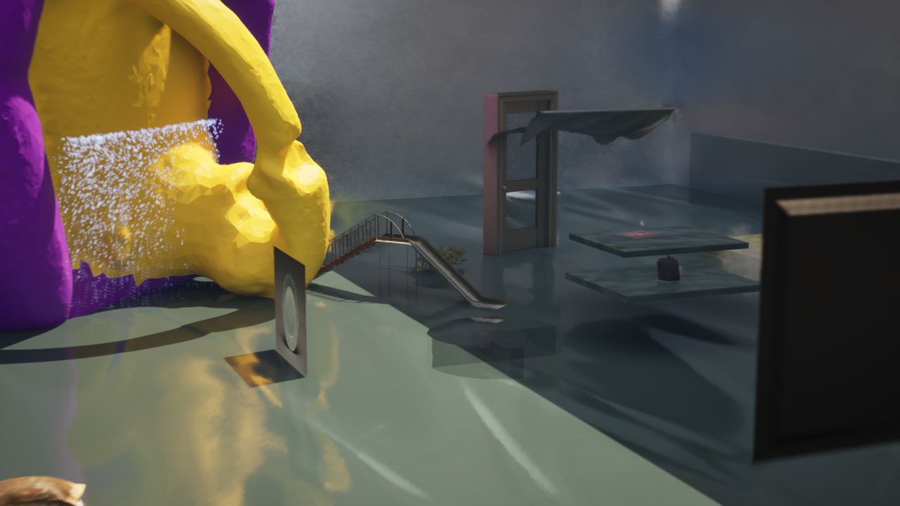
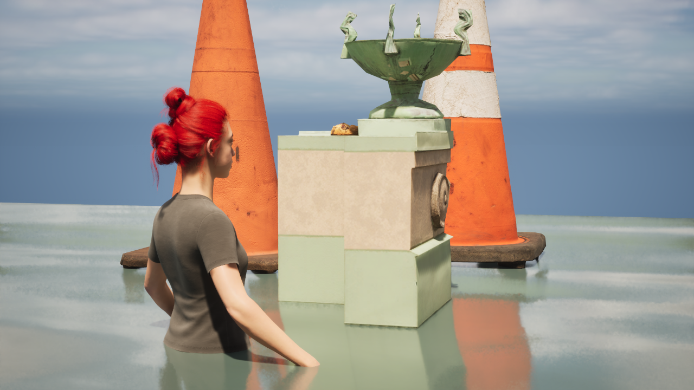
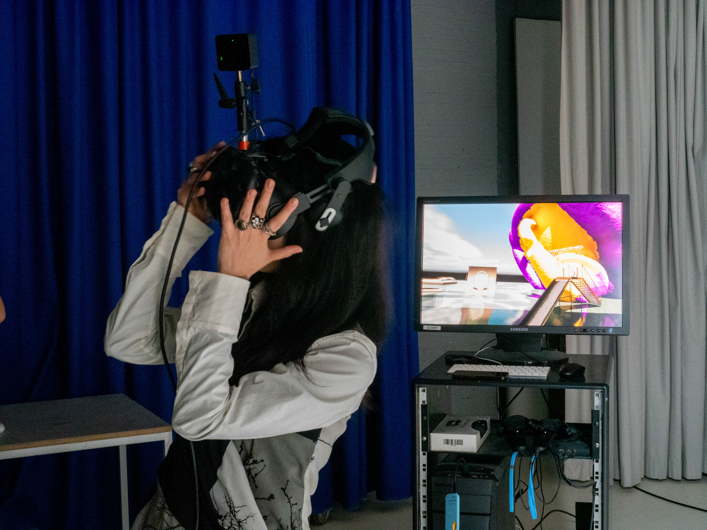

VR Experience created in Unreal Engine, 3D model made with Blender, free 3D model from Sketchfab and Quixel Bridge, images of old Chinese paintings and artifacts downloaded from The Metropolitan Museum of Art’s website, 3D scan of a shiny earring repainted in Cinema 4D.
A waterfall cascades over a gigantic earring. An old Chinese painting becomes your duvet cover. There’s a door that stays shut but doesn’t stop you from going anywhere. Objects appear in the wrong form, the wrong scale. You wander with a ghost who has red hair—on water, on grass.png. You look up and see a floating cloth with no texture. You walk around it and it disappears, not entirely—you still catch glimpses of it through the wind.
  